Architect · Builder · Founder, UEducate Global
He built Chennai's skyline. Now he is rebuilding the classroom.
SarathKakumanu
Sarath Kakumanu
Architect · Founder, Pioneer Group and UEducate Global
An architect with more than five decades in design and construction. He built Pioneer Group into one of Chennai's most respected real estate houses: almost 3 million square feet of premium commercial and residential projects across Tamil Nadu and Andhra Pradesh. Today he leads UEducate Global, the company behind KATBOOK, the digital textbook format NCERT has signed an MoU to adopt.
Reach out on LinkedIn, or read the press coverage.
Digital learning for schools, colleges and the national curriculum
Managing Director
Pioneer GroupDesign and construction in Chennai since 1983
01 / 07
Survey the land
Every project starts on the ground.
Floor 00 / 16
Plays on a loop · Drag to look around
Inventor
KWALLBuilding materials, and the machines that make them
- Developed 2014
- Hollow core
- Lightweight
- Acoustic variants
- Machinery designed by Sarath
Featured in
Coverage of the NCERT partnership and a live KATBOOK demo
Traditional vs digital learning: KatBook live demo
Experience
Forty three years of building, one company at a time
- 2025NCERT signs an MoU with UEducate · textbooks to be converted into KATBOOKs
- 2023Founder and Managing Director, UEducate Global · Chennai
- 2020UEducate digital ecosystem · KATBOOK, KAMPUS, KSMACC, USTUDY
- 2015Director, KPOST Software
- 2014KWALL wall panels · Management Director, Ritestone Solutions
- 2012KPOST and KSMACC · open and closed communication platforms
- 2001Pioneer Technical Services, Pioneer Textile Machinery, Kakumanu Developers and a run of builders and hotels
- 1996Director of Operations, Kakumanu Sudharsan Builders
- 1992Construction Management Software · the group's first software
- 1984Managing Director, Apple Advertising and Marketing
- 1983Managing Director, Pioneer Group · Chennai, construction management
Chennai
He has spent his working life in this city, from the temple tanks of Mylapore to the IT corridor on OMR. Eight corners that shape how he thinks. Hover a photo to see where it is.
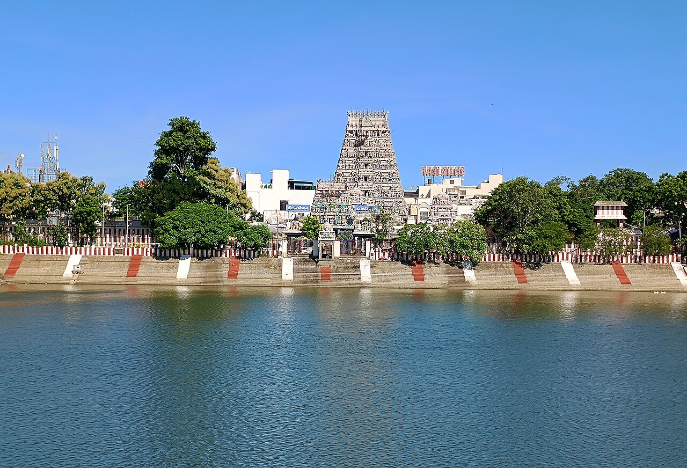
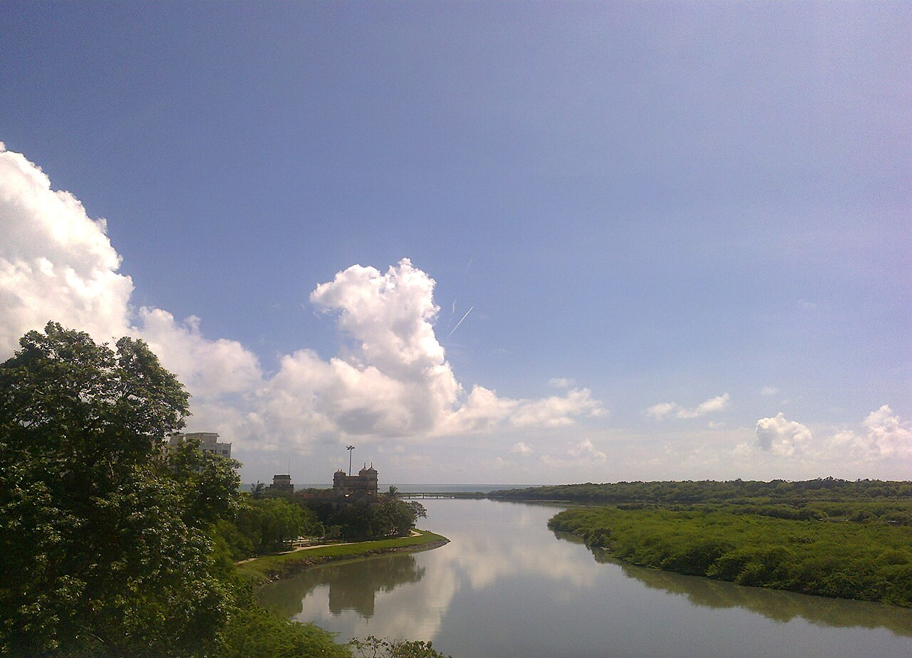
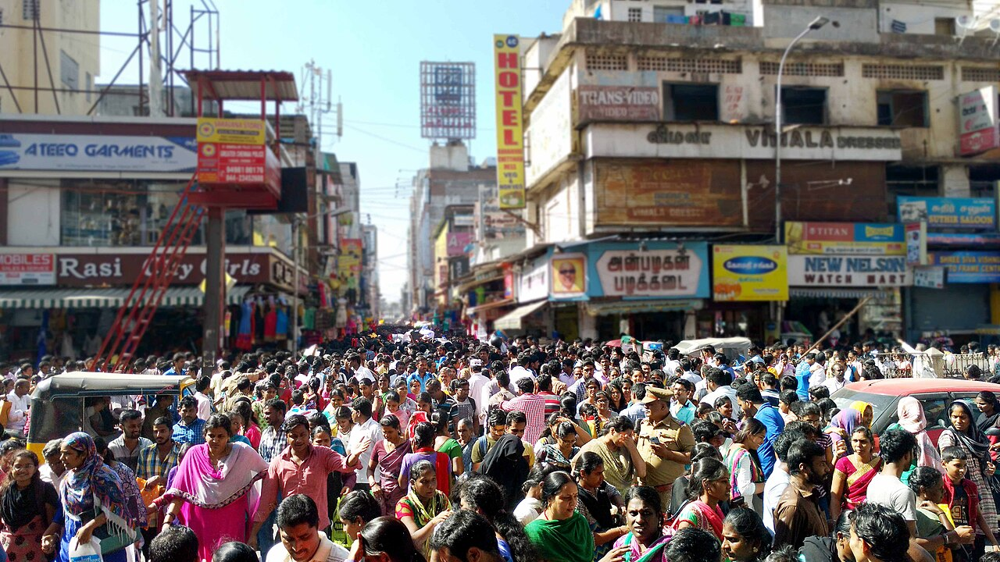
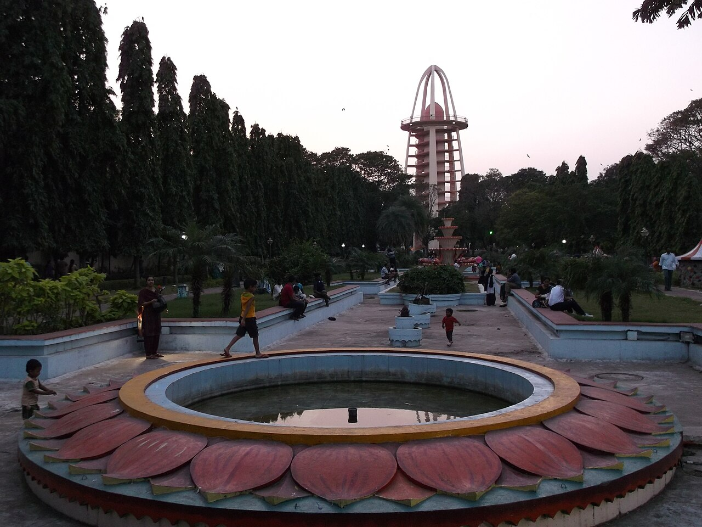
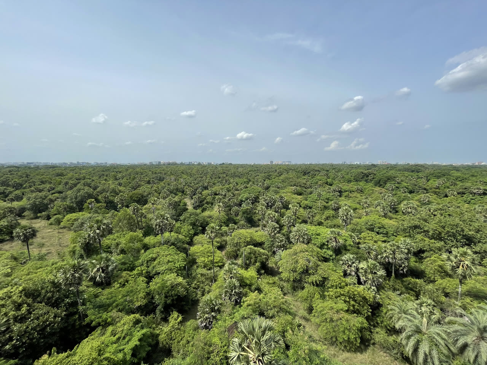
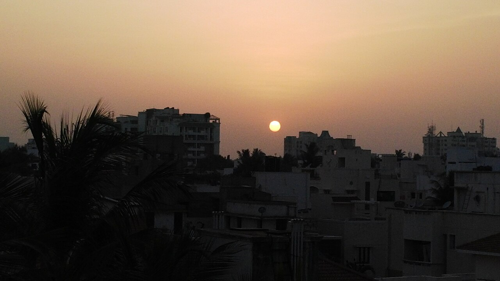
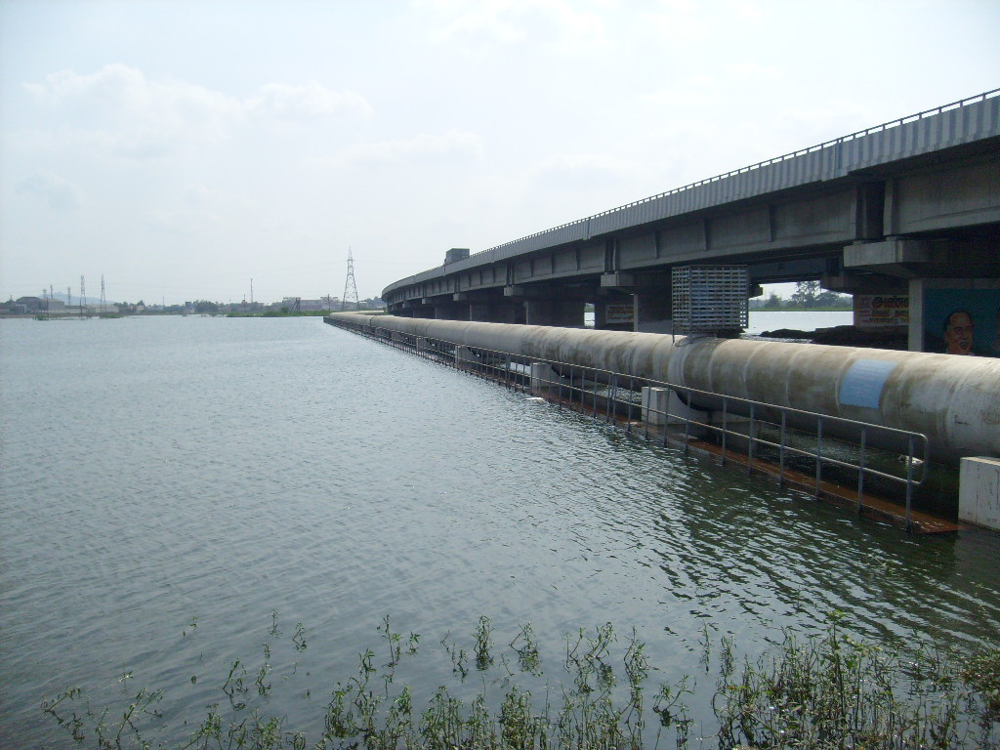
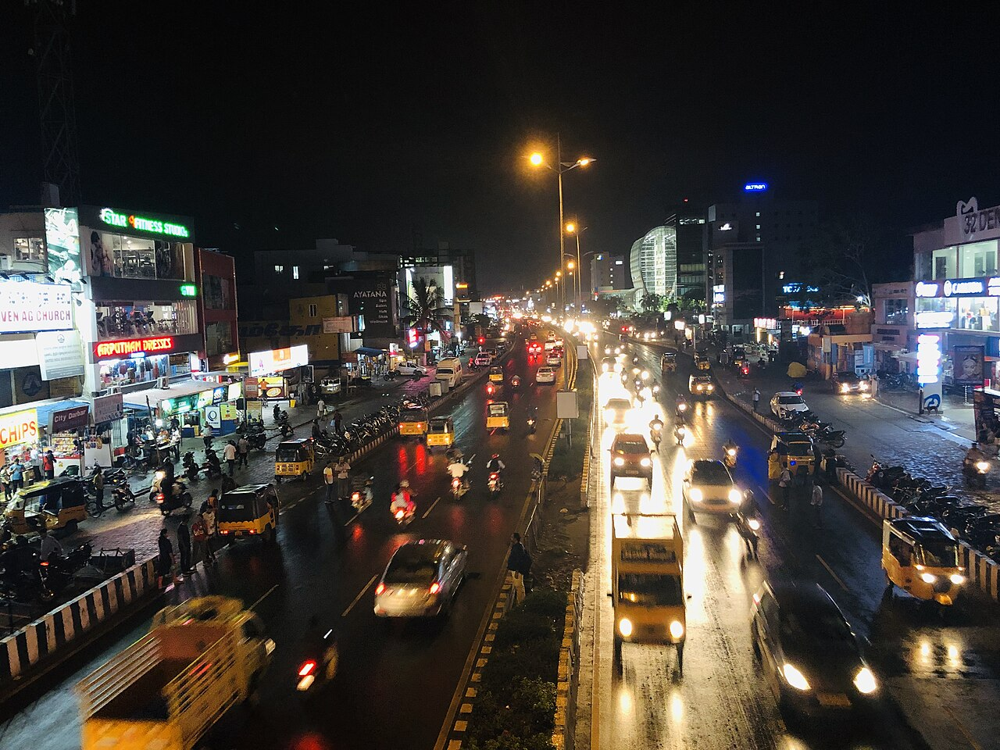
Photos from Wikimedia Commons: Mylapore by N. Vivekananthamoorthy (CC BY 4.0) · T. Nagar by Arunsarv (CC BY-SA 4.0) · Adyar by rajaraman sundaram (CC BY 3.0) · Anna Nagar by Rasnaboy (CC BY-SA 3.0) · Guindy by Ara C (CC BY-SA 4.0) · Velachery by Fioselvan (CC BY 4.0) · Porur by The EnforcerOffice of the secret service (CC BY 3.0) · OMR by Nazeem Fasil (CC BY-SA 4.0).
Questions
Who is Sarath Kakumanu?
An architect by training, with a bachelor's from the University of Madras. He founded Pioneer Group in Chennai and later founded UEducate Global, which works with NCERT on digital textbooks.
What is KATBOOK?
A digital book format from UEducate that wraps a textbook in concept videos, animations, 3D models, virtual labs, AI tools, a translator, a dictionary and an audiobook, with in book doubt clearing.
What is the NCERT partnership?
In August 2025 NCERT signed an MoU with UEducate Global to convert its textbooks into KATBOOKs. Pilots begin in select states, followed by nationwide implementation over 18 months.
What did he build before education?
Pioneer Group, with almost 3 million square feet of premium commercial and residential projects in Tamil Nadu and Andhra Pradesh, plus KWALL wall panels and construction software.
What is KWALL?
A lightweight hollow core wall panel he developed in 2014, along with the machinery to manufacture different types of acoustic wall panels.
How can I reach him?
Connect with Sarath on LinkedIn and send a short note about your project, school or idea.
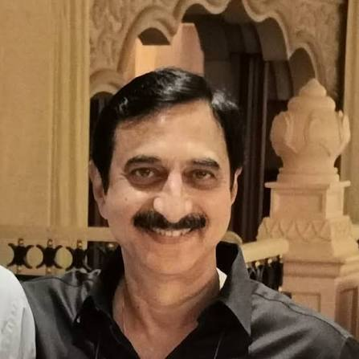
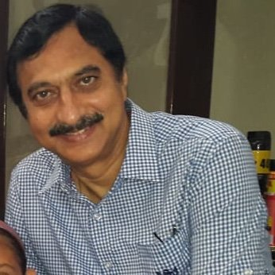
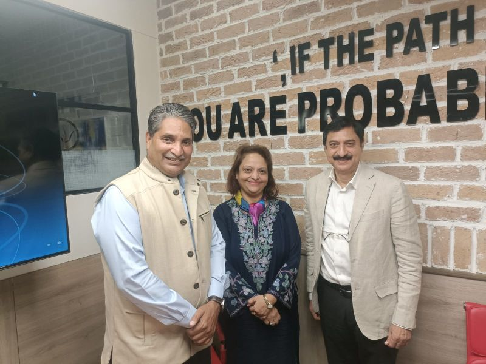
Building what lasts, then teaching it.
Sarath builds places and now builds the books and tools that fill them. If you are working on a school, a project or an idea, he would like to hear about it.
Connect on LinkedIn ↗